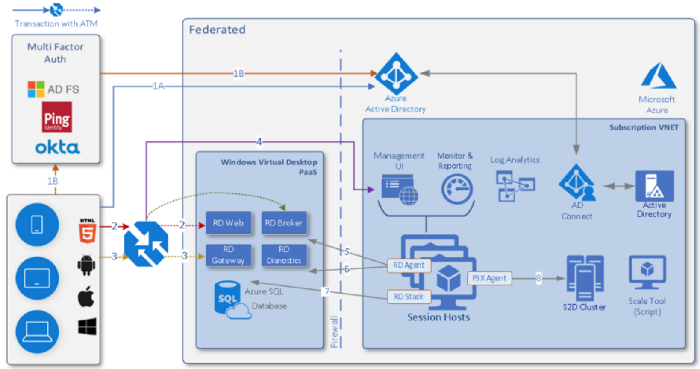
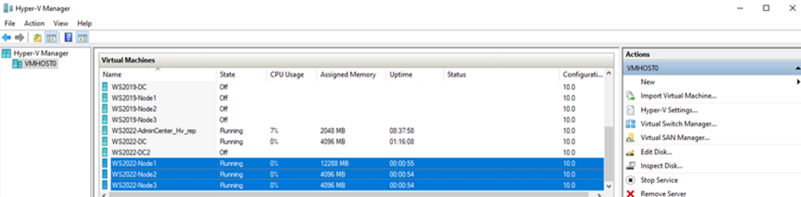

本記事はマイクロソフト社員によって公開されております。
本記事では、引き続き Windows Commercial における各技術エリア (チーム) にて扱う主な担当製品や学べる技術について紹介します！
今回は以下 3 チームについて情報についてご案内します。
目次：
4. User Experience
5. Windows Storage & High Availability
6. Directory Services
4. User Experience
User Experience チームでは Windows (クライアント/サーバー) の Core なテクノロジーに加え、 Remote Desktop Service や Azure Virtual Desktop、Windows 365 といった現在のトレンドとなっているリモート業務に特化した製品を取り扱っています。 また、 Printing Technology についても User Experience チームにて対応しています。お問い合わせを多くいただくテクノロジーをいくつかピックアップし以下に簡単に紹介させていただきます。
ユーザー インターフェースに関わるサービス/コンポーネント
COM/DCOM、WMI、 WinRM、 PowerShell、 SCM (Service Control Manager) など、Windows OS を操作、運用するためのコア コンポーネントを対応しています。それぞれ独立した製品群ではありませんが、 OS のみならず様々なテクノロジーの根幹を支えているサービスやコンポーネントを対応しています。
Remote Desktop Service
オンプレミスやクラウド上に展開している Windows Server を複数のユーザーから同時利用できるようにする機能となります。クライアント OS を利用した VDI もこの機能に含まれます。
Windows Server のリモート デスクトップ サービスの概要 | Microsoft Learn
Azure Virtual Desktop
Azure で実行されるデスクトップおよびアプリの仮想化サービスです。専用の Windows (10 or 11) クライアント OS を Server モードとして複数のユーザーから VDI として利用できるサービスです。
Azure Virtual Desktop とは - Azure | Microsoft Learn
～学べる・活かせる技術について～
Windows のコアなテクノロジーから、 Azure を利用した Azure Virtual Desktop や Windows 365 など幅広いエリアの技術に触れることができます。
調査は、プロセスやサービスの動作を追ったトレースや、ネットワーク パケット、プロセスや OS のダンプ、 Azure 解析ログなど多岐に渡りますので、様々な技術領域の知識と技術力を習得できます。そのため、得意なエリアはより深く、未経験のエリアでは新しい知識を学ぶことができます。
例えば、 Azure Virtual Desktop の場合、下記の通り Azure の様々なテクノロジーや、Active Directory や Network に加え Windows OS についても対応範囲となります。

AVD (Azure Virtual Desktop) 概念図
5. Windows Storage & High Availability
Windows Storage & High Availability チームでは、Storage や Hyper-V、Clustering に加えて Azure Stack HCI といった Hybrid Cloud 系の製品を対応しています。その中からよくお問い合わせをいただく製品を 3 点を ピックアップしました。
Windows Server Failover Clustering (WSFC)
サーバーの高可用性と信頼性を確保するための技術です。複数のサーバーをクラスターとして構成し、1台のサーバーが故障しても他のサーバーが自動的に引き継ぎ、サービスの中断を防ぎます。これにより、システムのダウンタイムを最小限に抑え、ビジネスの継続性を確保します。
Hyper-V
仮想化プラットフォームで、物理サーバー上に複数の仮想マシン (VM) を作成し、各 VM が独立して動作することで、リソースの効率的な利用やコスト削減が可能になります。これにより、テスト環境の構築やアプリケーションの隔離が簡単に行え、システムの柔軟性とスケーラビリティが向上します。
Azure Stack HCI
Hybrid Cloud ソリューションで、オンプレミスのデータセンターでクラウドの利便性を活用し、仮想化されたワークロードを実行します。これにより、既存のインフラを活かしつつ、クラウドのスケーラビリティや管理機能を利用できます。Azure サービスとの統合も容易で、コスト効率と柔軟性を向上させます。
～学べる・活かせる技術について～
システム基盤の技術
Cluster、Hyper-V および Storage はいずれもシステムの基盤となる技術でありこれらの技術を学び、活かすことができます。
クラスターは複数のコンポーネント (ネットワークやディスクなど) で構成されるため、WSFC の技術習得を通して幅広い基盤の技術に触れることができます。また、Hyper-V は仮想化基盤の技術であるため、仮想化についても学べます。Azure は Hyper-V の技術を利用しているため、Azure の利用に際しても活かせる知識になります。

ハイブリットクラウドの技術
Azure Stack HCI は上記のシステム基盤がベースとなりつつ、Azure のサービスと連携するハイブリットクラウドの環境を提供するものになります。そのため、Cluster や Hyper-V の技術を生かしつつ、Azure についても学んだり、クラウドの技術を活かすことが可能です。
6. Directory Services
Directory Services チームでは、認証周りの技術を担当しています。認証とは、ユーザーやデバイスがシステムにアクセスする際にその正当性を確認するプロセスであり、IT インフラストラクチャの基盤を支える重要な役割を担っています。具体的な製品は以下のようなものがあります。
Active Directory
企業のリソース管理において、ユーザーやコンピューター、グループなどの情報を一元管理し、セキュリティの向上と効率的な運用を可能とします。オンプレミスとクラウドとのハイブリッド環境もサポートしており、両方の環境で一貫した ID 管理が可能です。
Active Directory 証明書サービス
企業内の PKI (公開鍵基盤) を構築し、デジタル証明書の発行と管理を行います。Active Directory と連携することで証明書の発行や更新を自動化し、証明書の管理を一元化できます。
Windows Hello / Windows Hello for Business
PIN や生体認証を用いた認証方式です。パスワードを使用する代わりに、顔認識、指紋、または PIN を使用して安全かつ迅速にログインできます。
～学べる・活かせる技術について～
認証技術は日々進化しており、最新の技術を学ぶことができます。特にこの分野では、特定の OS や製品に依存しない認証や証明書の技術を学べるのは大きな魅力です。認証技術は様々なシステムの基盤を支えるものであり、マイクロソフトの多くの製品やソリューションに関わることができます。Active Directory だけでなく、クラウドの Entra ID や Intune とも連携することが多く、Windows OS のコアな部分にも興味があり、最新のクラウド技術にも興味がある方には、両方を学べる魅力的なチームです。クラウド時代において、クラウド製品だけでは物足りないと感じる方に、ぜひチャレンジしていただきたいポジションです。
Directory Services チームでは、入社後に必要な知識やスキルを身に付けられるサポート体制を整えていますので、マイクロソフトの製品に関する経験がなくても心配いりません。もしネットワーク、クラウド、トラブルシューティング、ソフトウェア開発などの経験を既にお持ちであれば、これまでのスキルを活かしながら、Directory Services チームでさらに活躍することができます。
<関連ブログ>